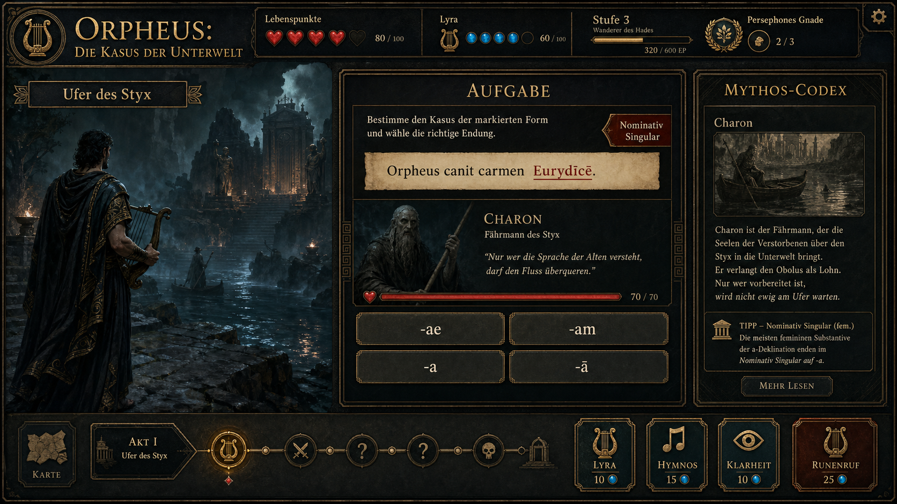

Direkt im Browser
Keine Installation, kein Konto. Ein Link genügt auf jedem modernen Gerät.
Browsergames für den Unterricht: fachlich fundiert, erzählerisch und ohne Installation spielbar.
Ausgewähltes Spiel
Hilf Orpheus, die Sprache der Unterwelt zu verstehen. Meistere die Kasus, triff Entscheidungen und öffne den Weg zurück ins Licht.
Orpheus spielen
Spiel öffnenFachliches Lernen als spielbare Erfahrung.

Ein storybasiertes Lern-Rollenspiel mit Bosskämpfen, Nebenquests und mehreren Enden.
Neue Fächer, neue Welten, gleiche Mission: Wissen erleben.
Digitale Lernräume, die fachliche Substanz und Spielfreude zusammendenken.
Keine Installation, kein Konto. Ein Link genügt auf jedem modernen Gerät.
Inhalte aus Unterrichtspraxis, fachlich geprüft und progressiv aufgebaut.
Geschichten, Entscheidungen und Spielmechaniken geben dem Üben Bedeutung.